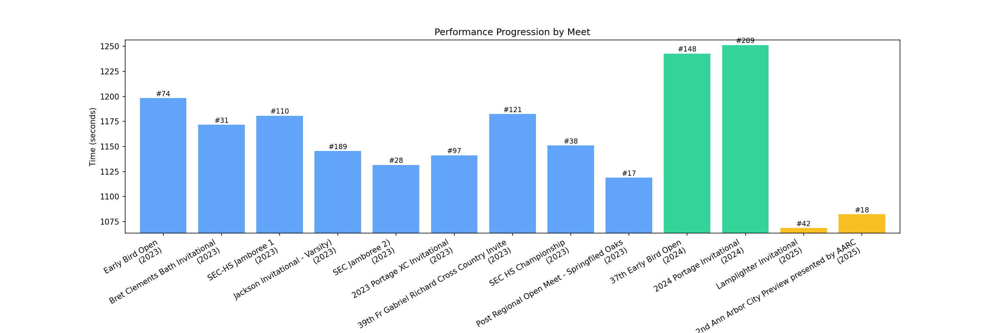

Athlete Information
Ryan Reynolds
Ann Arbor Skyline
Current Grade: 11
Link to athlete.net accountSeason Record (SR): 17:48.6
Personal Record (PR): 17:48.6
Ann Arbor Skyline
Current Grade: 11
Link to athlete.net accountSeason Record (SR): 17:48.6
Personal Record (PR): 17:48.6
| Race Name | Date | Location | Distance | Time | Place | Grade | Results |
|---|---|---|---|---|---|---|---|
| Lamplighter Invitational | Aug 16 2025 | N/A | 5K | 17:48.6 | 42 | 11 | View Results |
| 2nd Ann Arbor City Preview presented by AARC | Aug 28 2025 | N/A | 5K | 18:02.4 | 18 | 11 | View Results |
| 37th Early Bird Open (HS Open 5K) | Aug 30 2024 | N/A | 5K | 20:42.7 | 148 | 10 | View Results |
| 2024 Portage Invitational | Oct 5 2024 | N/A | 5K | 20:51.3 | 289 | 10 | View Results |
| Early Bird Open (Open Men's 5K) | Aug 31 2023 | N/A | 5K | 19:58.2 | 74 | 9 | View Results |
| Bret Clements Bath Invitational (J.V.) | Sep 9 2023 | N/A | 5K | 19:31.6 | 31 | 9 | View Results |
| SEC-HS Jamboree 1 (Red/White Varsity Boys) | Sep 13 2023 | N/A | 5K | 19:40.8 | 110 | 9 | View Results |
| Jackson Invitational - Varsity (Orange Division (1000 + enrolment)) | Sep 23 2023 | N/A | 5K | 19:05.4 | 189 | 9 | View Results |
| SEC Jamboree 2 (Red) (Reserve Wave 1 (<21:00)) | Sep 27 2023 | N/A | 5K | 18:51.7 | 28 | 9 | View Results |
| 2023 Portage XC Invitational (Division 1 Reserve) | Oct 7 2023 | N/A | 5K | 19:01.2 | 97 | 9 | View Results |
| 39th Fr Gabriel Richard Cross Country Invite (Varsity Large School) | Oct 14 2023 | N/A | 5K | 19:42.5 | 121 | 9 | View Results |
| SEC HS Championship (All Division Reserve) | Oct 19 2023 | N/A | 5K | 19:11.0 | 38 | 9 | View Results |
| Post Regional Open Meet (PROM) - Springfiled Oaks | Oct 28 2023 | N/A | 5K | 18:38.9 PR | 17 | 9 | View Results |
This graph visualizes the athlete’s race times across meets, color-coded by grade.
